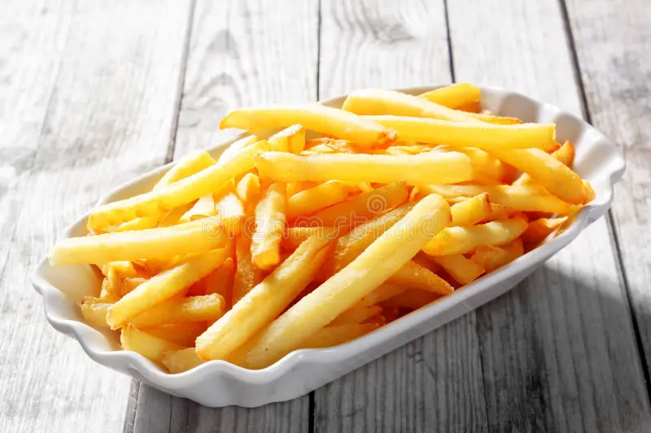

French Fries Recipe

Decription
The best potatoes for French fries are soaked in a sugar solution before frying. The sugar solution has something to do with the carbohydrates and prevents the potatoes from soaking up a lot of grease, so they get crunchy.
Ingridients
- 4 large russet potatoes
- Vegetable oil (for frying)
- Salt (to taste)
- Optional seasonings
Steps
- Peel the potatoes and rinse them under cold water to remove excess starch. Pat them dry with a clean towel or paper towel.
- Cut the potatoes into evenly sized matchsticks or strips, about 1/4 to 1/2 inch thick. You can use a sharp knife or a French fry cutter if available.
- Place the cut potatoes in a large bowl and cover them with cold water. Let them soak for at least 30 minutes, or up to 2 hours. This step helps remove more starch and results in crispier fries.
- After soaking, drain the potatoes and lay them on a clean towel or paper towel. Gently pat them dry to remove any excess water.
- In a large, deep pot or Dutch oven, pour enough vegetable oil to submerge the potatoes. Heat the oil over medium-high heat to 350-375°F (175-190°C). Use a kitchen thermometer to ensure the oil reaches the correct temperature.
- While the oil is heating, you can prepare a baking sheet lined with paper towels to drain the cooked fries.
- Carefully lower a batch of potatoes into the hot oil, making sure not to overcrowd the pot. Fry them in batches if necessary. Cook for about 3-5 minutes or until they are lightly golden and slightly crisp.
- Using a slotted spoon or tongs, remove the cooked fries from the oil and place them on the prepared baking sheet to drain excess oil.
- Once all batches are fried, increase the heat of the oil to 375-400°F (190-205°C) for a second round of frying. Return the fries to the hot oil in batches and fry for another 2-3 minutes until they turn golden brown and are crispy.
- Remove the second batch of fries from the oil and place them on the paper towels to drain. While still hot, season with salt and any additional desired spices.